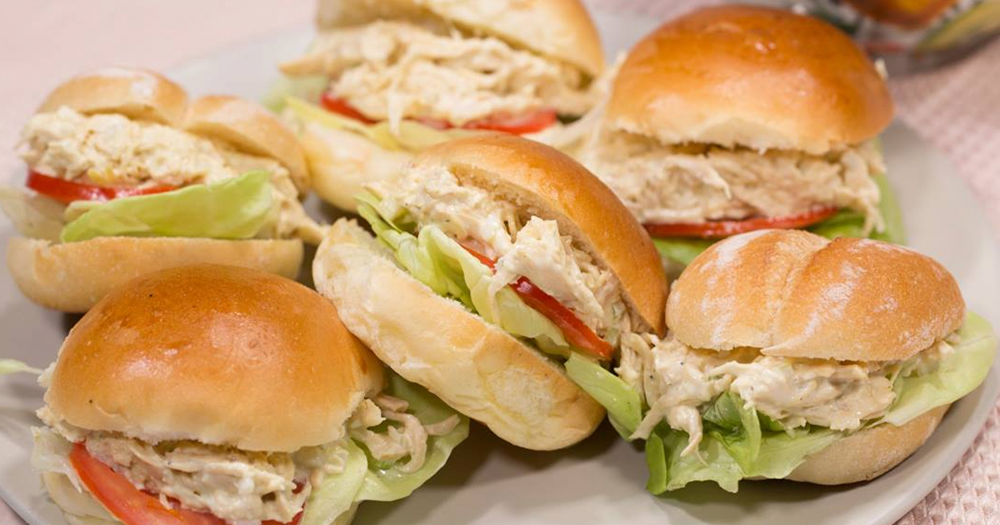
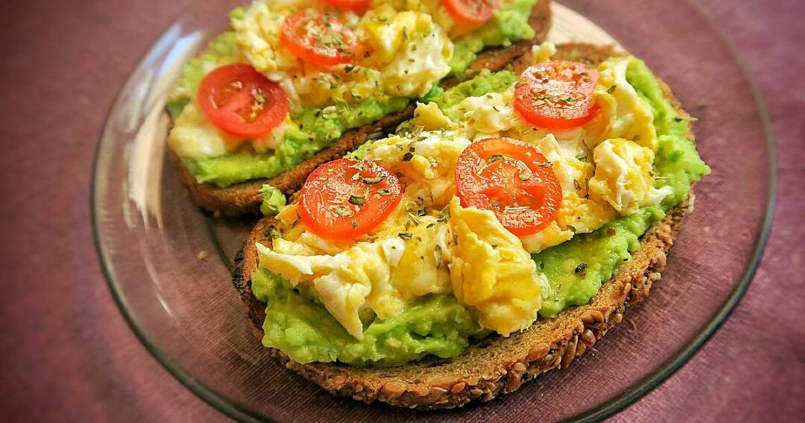
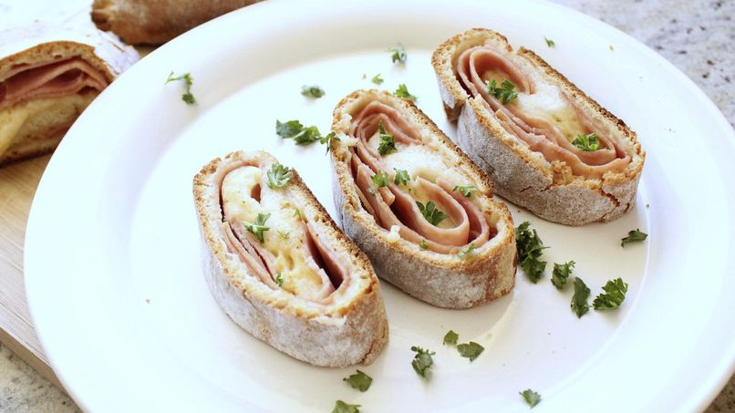

Recetas de Bocadillos
Mini Sándwiches de Pollo

Ingredientes
| Ingrediente | Cantidad |
|---|
| Pan de mini hamburguesa | 6 unidades |
| Pechuga de pollo | 1 unidad |
| Mayonesa | 2 cucharadas |
| Lechuga | 6 hojas |
| Tomate | 1 unidad |
| Sal y pimienta | Al gusto |
Preparación
- Cocinar la pechuga de pollo y desmenuzarla.
- Mezclar con mayonesa, sal y pimienta.
- Cortar los panes y colocar la mezcla de pollo.
- Añadir una hoja de lechuga y una rodaja de tomate.
- Cerrar los mini sándwiches y servir.
Tostadas de Aguacate y Huevo

Ingredientes
| Ingrediente | Cantidad |
|---|
| Pan integral | 2 rebanadas |
| Aguacate | 1 unidad |
| Huevo | 2 unidades |
| Sal y pimienta | Al gusto |
| Aceite de oliva | 1 cucharadita |
Preparación
- Tostar las rebanadas de pan.
- Pelar y triturar el aguacate con un poco de sal.
- Cocinar los huevos al gusto (fritos o pochados).
- Untar el aguacate sobre el pan y colocar el huevo encima.
- Agregar sal, pimienta y un chorrito de aceite de oliva.
Rollitos de Jamón y Queso

Ingredientes
| Ingrediente | Cantidad |
|---|
| Jamón de pavo | 6 rebanadas |
| Queso crema | 100g |
| Espinaca | 6 hojas |
| Mostaza | 1 cucharadita |
Preparación
- Untar una capa delgada de queso crema sobre las rebanadas de jamón.
- Colocar una hoja de espinaca en cada rebanada.
- Enrollar con cuidado y cortar en pequeños rollitos.
- Servir con un toque de mostaza.